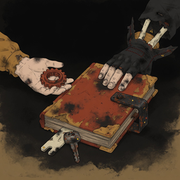
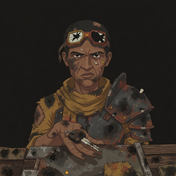
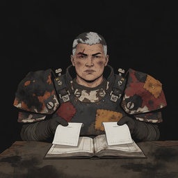
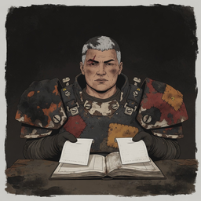
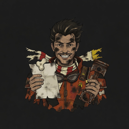
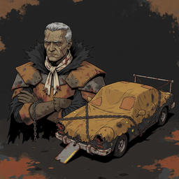
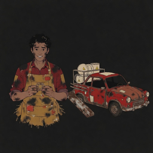
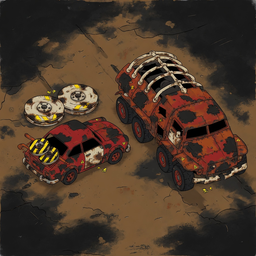

DEATH RIDE / CAMPAIGN STORY ART
A debt. Four allies.
One last car running.
Soot Pulp portraits and panels · Hot Ink ledger and meter · Rust and Ink rig
Every new image is pending your review. No new asset is approved or enabled in the game. The review presents candidates and failed attempts; machine grades cannot approve art.
28 new reserved images · 510 / 550 global · session limit 55 · stop: None
Rig states are blocked until you approve the exact rig reference. Ox retains the established female portrait; current campaign prose uses masculine pronouns. This inherited inconsistency remains open.
Inspect the Mechanic's age and nervous helpfulness, continuity of the four allies, clear debt/seizure/reveal story beats, two-car duel and hopeful workshop ending. No baked text: game labels supply all names and amounts.
Complete review data · Brief inventory
Mechanic
OWNER REVIEW PENDING · CURRENT · story-mechanic-v2
VLM_LOW_CONFIDENCE
Young adult with curly hair, patched apron and bearing; gentle worried smile reads helpful. Final framing edit preserves first face and closes the apron hem with full margin. Owner to judge whether nervousness is strong enough.
Exact identity / edit reference
Both local graders, prompt and exact hashes
mimo-9b:q8-64k: {'confidence': 0.75, 'description': 'A young adult male bust portrait on a solid magenta background. He has dark curly hair, a nervous helpful smile, and wears a red shirt under an ochre apron. Both hands are visible holding a small round object at chest level. The apron has a ragged rounded hem just below the hands. The figure is centered with a large uniform magenta field above and below, leaving clear margins from the image edges.', 'forbidden_details': False, 'heading_right': 'not_applicable', 'neutral_lighting': 'yes', 'subject_matches': 'yes', 'true_top_down': 'not_applicable'}
qwen3.8:27b-64k: {'forbidden_details': False, 'true_top_down': 'not_applicable', 'heading_right': 'not_applicable', 'subject_matches': 'yes', 'neutral_lighting': 'yes', 'confidence': 1.0, 'description': 'A young adult male with curly black hair and a nervous, helpful smile is depicted in a waist-up portrait. He is wearing a red collared shirt and a heavily stained, patched ochre apron. His hands are held together in front of his chest, holding a small, circular object. The character is centered on a solid, vibrant magenta background, with significant empty space above and below the figure, creating a sticker-like composition.'}
Use case: precise-object-edit. Preserve this exact young adult face, curly hair, nervous helpful smile, red shirt, ochre apron, bearing and both hands. Shrink the ENTIRE bust to HALF its current image height, centered on the same square canvas. Finish the lower apron with a ragged rounded hem just below the hands. All of the hair, shoulders, hands and apron must be visible. Surround it with a huge perfectly uniform solid magenta field, at least a QUARTER of the image height ABOVE and BELOW the complete bust. No part may extend to the image edge. This is a small sticker centred in a large blank square. No design or colour change to the character.
Source SHA-256: 52ed48477e4adfa16f188f44375d593a7185ef52f6f3ea5de9daec8e850cd689
Export SHA-256: 54d86fdfd5f843e8f478685a17c1de58ce015fb723e304ac8e6b4b1a7bc9641b
Guarded generation provenance · Export pixelsMechanic
OWNER REVIEW PENDING · EARLIER ATTEMPT · story-mechanic-v1
DIRECT INSPECTION: EXCLUDED. CROPPED_OR_MARGIN, VLM_LOW_CONFIDENCE
REJECTED: CROPPED_OR_MARGIN. Young adult with curly hair, patched apron and bearing; gentle worried smile reads helpful. Final framing edit preserves first face and closes the apron hem with full margin. Owner to judge whether nervousness is strong enough.
Both local graders, prompt and exact hashes
mimo-9b:q8-64k: {'confidence': 0.75, 'description': 'A cel-shaded illustration of a young adult male with warm brown skin, short unruly black curls, and a soft angular face. He wears a dried-red rolled-sleeve shirt under an oversized patched ochre apron, with soot-stained fingers cupping a small plain spare bearing. Head and shoulders plus hands are shown facing the viewer against a plain light background.', 'forbidden_details': False, 'heading_right': 'not_applicable', 'neutral_lighting': 'yes', 'subject_matches': 'yes', 'true_top_down': 'not_applicable'}
qwen3.8:27b-64k: {'forbidden_details': False, 'true_top_down': 'not_applicable', 'heading_right': 'not_applicable', 'subject_matches': 'yes', 'neutral_lighting': 'yes', 'confidence': 1.0, 'description': 'A young adult male with warm brown skin and short black curls, wearing a red shirt and a patched ochre apron, holding a small circular object in his hands.'}
Original young adult male parts-store owner, about 22, slim narrow shoulders, warm brown skin, soft angular face, unruly short black curls, worried raised brows and a tentative helpful smile. Oversized patched ochre shop apron over a dried-red rolled-sleeve shirt, soot-stained fingers, a small plain spare bearing cupped carefully in both hands. No armour, goggles or weapons. Head and shoulders plus hands, facing viewer. Complete bust within central 66 percent of square; ample empty margin, no environment.
Source SHA-256: e531f2025704baf52a61cb8bdf623425d1287581872f90d8378d99557c0c0392
Export SHA-256: 25ca96ffa1c6790350271d1c31ca944db0ff26c55349f3f3f018ecd95b59b45e
Guarded generation provenance · Export pixelsMechanic
OWNER REVIEW PENDING · EARLIER ATTEMPT · story-mechanic-v1-a2
DIRECT INSPECTION: EXCLUDED. CROPPED_OR_MARGIN, VLM_LOW_CONFIDENCE
REJECTED: CROPPED_OR_MARGIN. Young adult with curly hair, patched apron and bearing; gentle worried smile reads helpful. Final framing edit preserves first face and closes the apron hem with full margin. Owner to judge whether nervousness is strong enough.
Both local graders, prompt and exact hashes
mimo-9b:q8-64k: {'confidence': 0.75, 'description': 'A cel-shaded illustration of a young adult male parts-store owner with warm brown skin, soft angular face, and unruly short black curls. He wears a dried-red rolled-sleeve shirt under an oversized patched ochre apron, with soot-stained fingers cupping a small plain spare bearing. Head and shoulders plus hands are shown facing the viewer against a flat pink background with ample empty margin.', 'forbidden_details': False, 'heading_right': 'not_applicable', 'neutral_lighting': 'yes', 'subject_matches': 'yes', 'true_top_down': 'not_applicable'}
qwen3.8:27b-64k: {'forbidden_details': False, 'true_top_down': 'not_applicable', 'heading_right': 'not_applicable', 'subject_matches': 'yes', 'neutral_lighting': 'yes', 'confidence': 1.0, 'description': 'A young adult male with warm brown skin, short black curls, and a worried yet helpful expression. He wears a red shirt with rolled sleeves and a heavily soiled, patched ochre apron. His hands are cupped together, holding a small mechanical bearing. The background is a solid pink color, and the lighting is neutral with no cast shadows.'}
Original young adult male parts-store owner, about 22, slim narrow shoulders, warm brown skin, soft angular face, unruly short black curls, worried raised brows and a tentative helpful smile. Oversized patched ochre shop apron over a dried-red rolled-sleeve shirt, soot-stained fingers, a small plain spare bearing cupped carefully in both hands. No armour, goggles or weapons. Head and shoulders plus hands, facing viewer. Complete bust within central 66 percent of square; ample empty margin, no environment.
Source SHA-256: 77817e10dc99b6d354fb4fe40f57585028533e12d239b60edc69ce8ca030b575
Export SHA-256: 567690604cb4aa91d00a593e33a29f451df9afef6619bcddef32f070a9e336f4
Guarded generation provenance · Export pixelsDebt Contract
OWNER REVIEW PENDING · CURRENT · story-debt-contract-v1


Actual 256 × 256 px read
VLM_DISAGREEMENT, VLM_LOW_CONFIDENCE
Clamped worn folio, plain key and offered bearing explain the debt without baked text. Faces are out of frame; the power imbalance is told through hands. Local lighting disagreement retained.
Both local graders, prompt and exact hashes
mimo-9b:q8-64k: {'confidence': 0.75, 'description': "A square flat graphic illustration shows a battered red-and-tan debt folio lying open on a soot-dark ground, with a heavy iron clamp across its right edge. A pale shopkeeper's hand enters from the left holding a spare bearing, while a dark-skinned older official's hand presses down on the closed folio from the upper right. A plain vehicle key rests in front of the book. The composition is centered with quiet dark margins, and no writing, captions, speech bubbles, or decorative borders are visible.", 'forbidden_details': False, 'heading_right': 'not_applicable', 'neutral_lighting': 'yes', 'subject_matches': 'yes', 'true_top_down': 'not_applicable'}
qwen3.8:27b-64k: {'forbidden_details': False, 'true_top_down': 'not_applicable', 'heading_right': 'not_applicable', 'subject_matches': 'yes', 'neutral_lighting': 'no', 'confidence': 1.0, 'description': 'A dark, soot-stained illustration featuring a central, battered red book with a heavy iron clamp. A pale hand on the left offers a small, rusty gear, while a gloved hand on the right presses down on the book. A key and a wrench lie in the foreground. The scene is rendered in a flat, graphic style with muted earth tones and black shadows.'}
Use case: illustration-story. One square Soot Pulp narrative panel. A blank battered debt folio with a heavy iron clamp on a plain vehicle key. A young shopkeeper offers a spare bearing beside it; an older league official in a high black jagged collar presses the closed folio down. The pressure of a fraudulent debt is the subject. No writing anywhere, blank pages. Flat graphic tableau, large readable shapes, central action in middle 70 percent with quiet soot margins. No speech bubbles, captions, panels within panels, symbols resembling letters, or decorative border.
Source SHA-256: a31a82528d4a3a296a0774e1cb784aaffa5915cc75478b537fb6fc771fb5d6ae
Export SHA-256: 84b88ab04ce1e3b58d27fbf1a086032239afe191a10a7b7b473d8613a97964cc
Guarded generation provenance · Export pixelsAlly Rook
OWNER REVIEW PENDING · CURRENT · story-ally-rook-v1

Actual 256 × 256 px read
VLM_LOW_CONFIDENCE
Existing gaunt face, broken goggles and jagged shoulder retained; key extended across counter signals joining the player. Expression remains guarded rather than celebratory.
Exact identity / edit reference
Both local graders, prompt and exact hashes
mimo-9b:q8-64k: {'confidence': 0.75, 'description': 'A square illustration-story panel of a single adult male scavenger in a flat graphic style. He has medium-brown skin, gaunt angular cheeks, a healed cheek scar, uneven close-cropped dark hair, a dust scarf, and one broken goggle lens on his forehead. He wears a patched jacket and a single oversized jagged welded shoulder plate. He sits behind a patched counter, lowering his jagged shoulder and offering an open palm with a plain car key across it. The background is a quiet dark soot field with no speech bubbles, captions, panels within panels, symbols resembling letters, or decorative border.', 'forbidden_details': False, 'heading_right': 'not_applicable', 'neutral_lighting': 'yes', 'subject_matches': 'yes', 'true_top_down': 'not_applicable'}
qwen3.8:27b-64k: {'forbidden_details': False, 'true_top_down': 'not_applicable', 'heading_right': 'not_applicable', 'subject_matches': 'yes', 'neutral_lighting': 'yes', 'confidence': 1.0, 'description': 'A single adult male figure with medium-brown skin, gaunt angular cheeks, and a healed scar on his left cheek. He wears a yellow dust scarf, a tattered yellow shirt, and a large, jagged, rusted metal shoulder plate on his left side. On his forehead, he wears a pair of goggles with one broken lens. His expression is sour and calculating. He extends his right hand, palm up, offering a plain car key across a patched, soot-stained counter. The background is a solid, dark, soot-colored void. The lighting is flat and neutral, with no strong cast shadows or directional light sources. The composition is a central, square panel with the figure occupying the middle 70% of the frame.'}
Use case: illustration-story. One square Soot Pulp narrative panel. Preserve the exact face, hair, clothing and identity of the supplied portrait; expand into a story illustration. Original adult male bitter scavenger, medium-brown skin, gaunt angular cheeks, healed cheek scar, one broken goggle lens on the forehead, uneven close-cropped hair, dust scarf, single oversized jagged welded shoulder plate. Calculating sour expression and a narrow hunched silhouette. After defeat he lowers his jagged shoulder and offers an open palm and a plain car key across a patched counter. Uneasy solidarity replaces hostility. One figure, gesture of joining the player. Flat graphic tableau, large readable shapes, central action in middle 70 percent with quiet soot margins. No speech bubbles, captions, panels within panels, symbols resembling letters, or decorative border.
Source SHA-256: 4dd1844c4e685c5cdb195b6b20dbb2be27ad2758d1ecaa108edd7c7d45dab746
Export SHA-256: 26412ca9804f32faf8466324daede1ac51a6dddef86713025d1d569dfe463e7d
Guarded generation provenance · Export pixelsAlly Ox
OWNER REVIEW PENDING · CURRENT · story-ally-ox-v2


Actual 256 × 256 px read
VLM_LOW_CONFIDENCE
Existing broad silver-haired hauler presents duplicate blank receipts over the ledger. Final edit removes the pale border while preserving identity. Existing portrait/prose gender inconsistency is exposed on review, not resolved here.
Exact identity / edit reference
Both local graders, prompt and exact hashes
mimo-9b:q8-64k: {'confidence': 0.75, 'description': 'A flat Soot Pulp illustration of a seated armored figure with pale grey hair, dark skin, and a weathered dark jacket, holding two blank bone-coloured papers over an open book on a worn wooden table, set against a dark soot-black background.', 'forbidden_details': False, 'heading_right': 'not_applicable', 'neutral_lighting': 'yes', 'subject_matches': 'yes', 'true_top_down': 'not_applicable'}
qwen3.8:27b-64k: {'forbidden_details': False, 'true_top_down': 'not_applicable', 'heading_right': 'not_applicable', 'subject_matches': 'yes', 'neutral_lighting': 'yes', 'confidence': 1.0, 'description': 'A man with short, graying hair and a scar on his forehead is depicted in a flat, cel-shaded style. He wears heavy, rusted, and patched armor with large shoulder pauldrons and black gloves. He is seated at a dark, textured table, holding two blank sheets of paper over an open book. The background is a solid, dark, soot-black color (#171513) that extends to all edges of the canvas, with no visible border or frame. The lighting is neutral and even, with no cast shadows or directional highlights.'}
Use case: precise-object-edit. Preserve the EXACT face, hair, skin, clothing, shoulders, hands, blank papers and story gesture of this supplied narrative panel. Change ONLY the exterior pale paper border: replace ALL white/cream canvas perimeter with uninterrupted SOOT BLACK #171513 extending fully to every canvas edge. The entire canvas must have the same dark soot background behind the existing figure. No light paper border, no frame, no outline, no new objects, no text. Keep the central blank bone-colour papers unchanged and keep all character features and colours unchanged. Flat neutral Soot Pulp illustration, no cast shadow.
Source SHA-256: ac431e0fec5c0869f763fd89cffa4ee2dc0f6afd7ef36507b2c459ee391b6083
Export SHA-256: e4235c926be4050fd103d32a2993881240a88ea2f44e2e969f2c36f2b276f79a
Guarded generation provenance · Export pixelsAlly Ox
OWNER REVIEW PENDING · EARLIER ATTEMPT · story-ally-ox-v1

Actual 256 × 256 px read
DIRECT INSPECTION: EXCLUDED. VLM_LOW_CONFIDENCE
Earlier attempt retains unwanted pale perimeter; superseded by targeted background correction. Existing broad silver-haired hauler presents duplicate blank receipts over the ledger. Final edit removes the pale border while preserving identity. Existing portrait/prose gender inconsistency is exposed on review, not resolved here.
Exact identity / edit reference
Both local graders, prompt and exact hashes
mimo-9b:q8-64k: {'confidence': 0.75, 'description': 'Square flat graphic illustration of a single adult female heavy hauler with pale weathered skin, broad square face and neck, short silver bristle hair, dark eyebrow scar, enormous unequal slab shoulder armour, and a patched soot work vest. She sits behind a low wide fortress silhouette, calmly laying two blank receipt sheets beside an open ledger and pushing them toward the viewer. The pages have no marks or writing. The figure is centered in the middle 70 percent with quiet soot margins. No speech bubbles, captions, panels within panels, symbols resembling letters, or decorative border. Flat graphic tableau with large readable shapes and no cast ground shadow or obvious one-sided illumination.', 'forbidden_details': False, 'heading_right': 'not_applicable', 'neutral_lighting': 'yes', 'subject_matches': 'yes', 'true_top_down': 'not_applicable'}
qwen3.8:27b-64k: {'forbidden_details': False, 'true_top_down': 'not_applicable', 'heading_right': 'not_applicable', 'subject_matches': 'yes', 'neutral_lighting': 'yes', 'confidence': 1.0, 'description': 'A square, flat graphic illustration in a soot-pulp style featuring a central figure of an adult female heavy hauler. She has pale, weathered skin, a broad square face, and short silver bristle hair. A distinct scar is visible on her right eyebrow. She wears enormous, unequal slab shoulder armor and a patched soot work vest with chipped bone collar bolts. The figure sits behind a table, holding two blank receipt sheets in gloved hands, positioned beside an open ledger. The background is a dark, textured soot margin, and the overall composition is a calm, implacable tableau with no text, logos, or decorative borders.'}
Use case: illustration-story. One square Soot Pulp narrative panel. Preserve the exact face, hair, clothing and identity of the supplied portrait; expand into a story illustration. Original adult female heavy hauler, pale weathered skin, broad square face and neck, short silver bristle hair, dark eyebrow scar, enormous unequal slab shoulder armour and a patched soot work vest. Calm implacable stare, low wide fortress silhouette; chipped bone collar bolts. After defeat this hauler calmly lays two matching blank receipt sheets beside an open ledger and pushes them toward the viewer: proof of stolen payments and solidarity with the crew. One figure. Pages have no marks or writing. Flat graphic tableau, large readable shapes, central action in middle 70 percent with quiet soot margins. No speech bubbles, captions, panels within panels, symbols resembling letters, or decorative border.
Source SHA-256: 30e7d3bcc82fa1531b1ad7d6074b15e486d88aa9a94662e8e33fe4fdb7b276e0
Export SHA-256: c70ff45f7656fc639149be5358ad67a966b2bbe9bfdb2f02d1ac14c4714c6e6b
Guarded generation provenance · Export pixelsAlly Vex
OWNER REVIEW PENDING · CURRENT · story-ally-vex-v1


Actual 256 × 256 px read
VLM_LOW_CONFIDENCE
Existing crest, moustache and neck goggles retained; receipt and part offered with conspiratorial grin. Character stays energetic and recognizable.
Exact identity / edit reference
Both local graders, prompt and exact hashes
mimo-9b:q8-64k: {'confidence': 0.75, 'description': 'A square flat graphic illustration of a single adult male speed addict with light-brown skin, swept-back ragged tall dark hair, small moustache, and chipped racing goggles hanging at his neck. He wears a rust-orange patched sleeveless suit with narrow sharp shoulders and an asymmetrical scarf. He holds a folded blank route sheet in one hand and a plain spare engine part in the other, with a wild clenched grin and a relieved conspiratorial expression. The background is a quiet soot-dark field with no ground shadow, and there are no speech bubbles, captions, panels, or decorative borders.', 'forbidden_details': False, 'heading_right': 'not_applicable', 'neutral_lighting': 'yes', 'subject_matches': 'yes', 'true_top_down': 'not_applicable'}
qwen3.8:27b-64k: {'forbidden_details': False, 'true_top_down': 'not_applicable', 'heading_right': 'not_applicable', 'subject_matches': 'yes', 'neutral_lighting': 'yes', 'confidence': 1.0, 'description': "A stylized, flat graphic illustration of a male character with a wild grin, soot-stained face, and swept-back dark hair. He wears a rust-orange patched sleeveless suit with a red and white striped scarf and chipped racing goggles around his neck. In his hands, he holds a folded blank sheet of paper and a plain spare engine part (a piston). The background is a solid dark gray, creating a quiet soot margin around the central figure. The style is consistent with a 'Soot Pulp' narrative panel, featuring large readable shapes and no text or logos."}
Use case: illustration-story. One square Soot Pulp narrative panel. Preserve the exact face, hair, clothing and identity of the supplied portrait; expand into a story illustration. Original adult male speed addict, light-brown skin, swept-back ragged tall crest of dark hair, small moustache, chipped racing goggles hanging at the neck, rust-orange patched sleeveless suit, narrow sharp shoulders. Wild clenched grin, asymmetrical scarf ends and restless pointed silhouette. After defeat he offers a folded blank route sheet and a plain spare engine part with a relieved conspiratorial grin, joining the player and sharing the northbound address. One figure, no writing. Flat graphic tableau, large readable shapes, central action in middle 70 percent with quiet soot margins. No speech bubbles, captions, panels within panels, symbols resembling letters, or decorative border.
Source SHA-256: 31a3e207ff32b592f1b9a7031630346f3d716f96f685dde06f8a9ae2aa64e9ba
Export SHA-256: 721f6c131c5a82e5d563eb33d0e52609ccb40488b3535834bebbeaf1fe2516cc
Guarded generation provenance · Export pixelsAlly Mica
OWNER REVIEW PENDING · CURRENT · story-ally-mica-v2
VLM_DISAGREEMENT, VLM_LOW_CONFIDENCE, VLM_UNCERTAIN
Existing wrap, ear protector, dark skin and focused face retained. Blank duplicate sheets are held forward. Final edit removes the pale paper perimeter.
Exact identity / edit reference
Both local graders, prompt and exact hashes
mimo-9b:q8-64k: {'confidence': 1, 'description': 'A flat Soot Pulp illustration of a Black woman with dark skin, short curly black hair, and a white bandage wrapped around her head. She wears a torn tan jacket with dark shoulder pads, patches, and a red strap, holding a stack of blank bone-coloured papers in front of her chest with her right hand. The background is a dark soot black, with no cast shadow or one-sided illumination.', 'forbidden_details': False, 'heading_right': 'not_applicable', 'neutral_lighting': 'yes', 'subject_matches': 'yes', 'true_top_down': 'not_applicable'}
qwen3.8:27b-64k: {'forbidden_details': False, 'true_top_down': 'not_applicable', 'heading_right': 'not_applicable', 'subject_matches': 'uncertain', 'neutral_lighting': 'yes', 'confidence': 0.75, 'description': 'A dark-skinned person with short curly hair, wearing a blood-stained white headband and a red earpiece, dressed in a tattered, patched yellow-brown jacket with shoulder armor. They are holding a thick stack of blank, bone-colored papers in front of their chest. The background is a solid, dark, soot-black color (#171513) that extends to all edges of the canvas, with no visible border or frame. The lighting is flat and neutral, with no cast shadows or strong directional light sources.'}
Use case: precise-object-edit. Preserve the EXACT face, hair, skin, clothing, shoulders, hands, blank papers and story gesture of this supplied narrative panel. Change ONLY the exterior pale paper border: replace ALL white/cream canvas perimeter with uninterrupted SOOT BLACK #171513 extending fully to every canvas edge. The entire canvas must have the same dark soot background behind the existing figure. No light paper border, no frame, no outline, no new objects, no text. Keep the central blank bone-colour papers unchanged and keep all character features and colours unchanged. Flat neutral Soot Pulp illustration, no cast shadow.
Source SHA-256: c72c259294766eac847173b78d068883160624dc74a623c87c798f94546f3261
Export SHA-256: b355b971213cfe9d3d1c09f96e24bd19ed7e3113398661fcc3c52f7bfc156892
Guarded generation provenance · Export pixelsAlly Mica
OWNER REVIEW PENDING · EARLIER ATTEMPT · story-ally-mica-v1
DIRECT INSPECTION: EXCLUDED. OWNER_ACCEPTANCE_PENDING
Earlier attempt retains unwanted pale perimeter; superseded by targeted background correction. Existing wrap, ear protector, dark skin and focused face retained. Blank duplicate sheets are held forward. Final edit removes the pale paper perimeter.
Exact identity / edit reference
Both local graders, prompt and exact hashes
mimo-9b:q8-64k: {'confidence': 1, 'description': 'Square flat graphic illustration of a single adult female grip artist with dark skin, short coiled hair under a dirty bone head wrap, focused eyes, two short soot cheek-paint dashes, cropped patched ochre jacket, tyre-rubber shoulder guards, rust ear protector, holding a blank duplicate ledger sheet toward the viewer with a controlled expression, on a quiet soot background with no writing, speech bubbles, captions, panels, symbols, or decorative border.', 'forbidden_details': False, 'heading_right': 'not_applicable', 'neutral_lighting': 'yes', 'subject_matches': 'yes', 'true_top_down': 'not_applicable'}
qwen3.8:27b-64k: {'forbidden_details': False, 'true_top_down': 'not_applicable', 'heading_right': 'not_applicable', 'subject_matches': 'yes', 'neutral_lighting': 'yes', 'confidence': 1.0, 'description': 'A square, flat graphic illustration featuring a central portrait of an adult female with dark skin and short coiled hair. She wears a dirty, bone-colored head wrap and a rust-colored ear protector on her right side. Her face shows a deliberate, controlled expression with two short soot dashes on her cheeks. She is dressed in a cropped, patched ochre jacket with dark, tyre-rubber shoulder guards. Her right hand extends forward, holding a thick stack of blank, off-white ledger sheets, offering them toward the viewer. The background is a solid, dark soot-black color with rough, torn-paper style edges, creating a quiet margin around the figure. There is no writing, logos, or speech bubbles present.'}
Use case: illustration-story. One square Soot Pulp narrative panel. Preserve the exact face, hair, clothing and identity of the supplied portrait; expand into a story illustration. Original adult female grip artist, dark skin, short coiled hair under a dirty bone head wrap, patient focused eyes, two short soot cheek-paint dashes, cropped patched ochre jacket, tyre-rubber shoulder guards. Balanced compact silhouette, rust ear protector, deliberate controlled expression. After defeat she divides blank duplicate ledger sheets into several bundles and offers one toward the viewer, protecting the evidence and joining the player. One figure, no writing. Flat graphic tableau, large readable shapes, central action in middle 70 percent with quiet soot margins. No speech bubbles, captions, panels within panels, symbols resembling letters, or decorative border.
Source SHA-256: 48d4686caa659dd9479aa9bfb5271f5b29ceb00497bde6822a8f2ba4ecb375b9
Export SHA-256: 957fe52c5062e0421ac91d54c8397dfeafd30977796c7f813eaae9e7c8f4bf8b
Guarded generation provenance · Export pixelsCar Seizure
OWNER REVIEW PENDING · CURRENT · story-car-seizure-v1


Actual 256 × 256 px read
VLM_DISAGREEMENT, VLM_LOW_CONFIDENCE
Marrow stands beside a covered generic car and hanging blank claim tag; player-specific chassis is left anonymous. No injury or extra player identity.
Both local graders, prompt and exact hashes
mimo-9b:q8-64k: {'confidence': 0.75, 'description': 'Square flat graphic illustration-story panel: an older adult league boss with olive weathered skin, angular face, deeply lined mouth, silver hair swept into a severe short crest, stern hostile composure, imposing wide triangular silhouette, bone scarf and one old healed temple scar, high soot-black jagged collar and layered rust metal shoulder mantle, standing beside a generic small coupe under a rough tarpaulin secured by a heavy chain and a blank metal lien tag. No driver. Control and confiscation, no combat. Flat graphic tableau, large readable shapes, central action in middle 70 percent with quiet soot margins. No speech bubbles, captions, panels within panels, symbols resembling letters, or decorative border.', 'forbidden_details': False, 'heading_right': 'not_applicable', 'neutral_lighting': 'yes', 'subject_matches': 'yes', 'true_top_down': 'not_applicable'}
qwen3.8:27b-64k: {'forbidden_details': False, 'true_top_down': 'not_applicable', 'heading_right': 'not_applicable', 'subject_matches': 'yes', 'neutral_lighting': 'no', 'confidence': 1.0, 'description': 'A stern, older adult male with silver hair, olive skin, and a scarred face stands with arms crossed, wearing a jagged black collar and rusted metal shoulder armor. Beside him is a small, generic coupe covered by a rough, patched tarpaulin, secured with heavy chains and a blank metal tag hanging from the front bumper. The scene is set against a dark, soot-stained background with a gritty, flat graphic style.'}
Use case: illustration-story. One square Soot Pulp narrative panel. Original older adult league boss, olive weathered skin, angular face, deeply lined mouth, silver hair swept into a severe short crest, high soot-black jagged collar and layered rust metal shoulder mantle. Stern hostile composure, imposing wide triangular silhouette, bone scarf and one old healed temple scar; no crown or insignia. He stands beside a generic small coupe under a rough tarpaulin secured by a heavy chain and a blank metal lien tag. The covered car is deliberately anonymous because the actual seized chassis varies. No driver. Control and confiscation, no combat. Flat graphic tableau, large readable shapes, central action in middle 70 percent with quiet soot margins. No speech bubbles, captions, panels within panels, symbols resembling letters, or decorative border.
Source SHA-256: 00ad0776cd3e628f5bba12be88bf6f1823b6992986b4ada2dc4d613c5694f62a
Export SHA-256: a339cfb15fd26339e8ca561ceb18cde621d9ba03933008dd59a282ffff0c97d9
Guarded generation provenance · Export pixelsRig Reveal
OWNER REVIEW PENDING · CURRENT · story-rig-reveal-v3

Actual 256 × 256 px read
VLM_DISAGREEMENT, VLM_LOW_CONFIDENCE
Mechanic identity retained from portrait beside a humble mine-rack car. Red body repaint aligns the panel with the overhead reference. Final anatomy edit removes the extra hand and the curtain altogether: exactly two hands hold the bearing. Narrative perspective differs deliberately from the car sprite; owner should review the simplification.
Exact identity / edit reference
Both local graders, prompt and exact hashes
mimo-9b:q8-64k: {'confidence': 0.75, 'description': "A stylized illustration of a worried mechanic in a red shirt and soot-stained apron holding a small bearing, standing beside a red vintage car with a mine rack carrying two cream cylindrical tanks marked with yellow warning triangles. The background is a plain dark charcoal field with no ground plane. The mechanic's right arm (viewer's left) is bent with the forearm crossing in front of his body, and a third hand appears to grip the curtain at the right of his torso. The curtain is ochre-yellow fabric with dark soot patches, red patches, and frayed edges, hanging from an unseen hook. The car is a red two-door sedan with a white roof, cream mine rack, and two cream cylindrical tanks with yellow warning triangles. The car faces screen right. The mechanic's face is visible with dark hair, worried expression, and two hands holding the bearing in front of his apron.", 'forbidden_details': False, 'heading_right': 'yes', 'neutral_lighting': 'yes', 'subject_matches': 'yes', 'true_top_down': 'not_applicable'}
qwen3.8:27b-64k: {'forbidden_details': False, 'true_top_down': 'not_applicable', 'heading_right': 'not_applicable', 'subject_matches': 'yes', 'neutral_lighting': 'yes', 'confidence': 1.0, 'description': 'A portrait of a mechanic with a worried expression, wearing a red shirt and a stained yellow apron, holding a small bearing with two hands. To his right is a red, rusted car with a rack of barrels on the back, set against a dark background.'}
Use case: precise-object-edit. Fix ONE anatomical error in this supplied image. The Mechanic currently has an unwanted THIRD HAND gripping the curtain at the right of his body. REMOVE that curtain-gripping hand completely and paint only plain hanging ochre curtain fabric in its place. Keep exactly TWO HANDS, the existing pair together in front of his apron holding the small bearing. The curtain hangs open from an unseen fixed hook; nobody touches it. Preserve the EXACT face, hair, worried expression, two correct hands, bearing, apron, shirt, car, red body paint, mine rack, composition, scale and soot background. Do not add anything else. No new arms or hands anywhere.
Source SHA-256: ef68b198a0700a38b8b4770d1c8ae686b15d5eb45a9a35d34205c84b2e1b8759
Export SHA-256: 1519d787b7d56cf44edebf2a10663ce65175604a08233f6f8123880d0fd7855f
Guarded generation provenance · Export pixelsRig Reveal
OWNER REVIEW PENDING · EARLIER ATTEMPT · story-rig-reveal-v1
DIRECT INSPECTION: EXCLUDED. VLM_DISAGREEMENT, VLM_LOW_CONFIDENCE
Earlier reveal has an extra curtain-gripping hand as well as the two bearing hands; v1 also has pale car paint. Superseded by final anatomy edit. Mechanic identity retained from portrait beside a humble mine-rack car. Red body repaint aligns the panel with the overhead reference. Final anatomy edit removes the extra hand and the curtain altogether: exactly two hands hold the bearing. Narrative perspective differs deliberately from the car sprite; owner should review the simplification.
Exact identity / edit reference
Both local graders, prompt and exact hashes
mimo-9b:q8-64k: {'confidence': 0.75, 'description': 'A flat graphic illustration-story panel on a dark charcoal backdrop. A slim young adult male mechanic with warm brown skin, soft angular face, unruly short black curls, worried raised brows and a tentative smile stands at left, wearing a dried-red rolled-sleeve shirt under an oversized patched ochre apron. His soot-stained fingers cup a small plain spare bearing. He holds a torn ochre workshop curtain with his right hand, pulling it back to reveal a compact scavenged coupe at right. The car has a rounded nose facing screen right, four inset narrow tyres, a short patched dried-red hood, dark windshield, small bone roof patch, and a clearly exposed welded rectangular rear rack at left holding three round flat mine canisters and a short rear-facing delivery chute. Modest bent scrap rails and mismatched sheet metal complete the humble mine-dispatcher conversion. The empty cabin is visible and the mechanic stands outside the car. No lettering, speech bubbles, captions, panels within panels, symbols resembling letters, or decorative border. Quiet soot margins frame the central action.', 'forbidden_details': False, 'heading_right': 'yes', 'neutral_lighting': 'yes', 'subject_matches': 'yes', 'true_top_down': 'not_applicable'}
qwen3.8:27b-64k: {'forbidden_details': False, 'true_top_down': 'not_applicable', 'heading_right': 'not_applicable', 'subject_matches': 'yes', 'neutral_lighting': 'yes', 'confidence': 1.0, 'description': 'A young adult male mechanic with warm brown skin, short black curls, and a worried yet helpful expression stands in the foreground. He wears a red shirt with rolled sleeves and a large, patched ochre apron stained with soot. He holds a small, plain bearing cupped carefully in both hands while pulling back a tattered, soot-stained curtain with his left hand. Behind him to the right is a humble, scavenged compact car with a rounded nose facing the right side of the frame. The car features a patched red hood, a bone-colored roof patch, and a welded rectangular rack on the rear holding three round canisters marked with yellow warning triangles. The scene is set against a dark, neutral background with flat, diagram-like staging.'}
Preserve the exact Mechanic face, curly hair, red shirt, apron and identity of the supplied image. Expand to a story tableau. Use case: illustration-story. One square Soot Pulp narrative panel. Original young adult male parts-store owner, about 22, slim narrow shoulders, warm brown skin, soft angular face, unruly short black curls, worried raised brows and a tentative helpful smile. Oversized patched ochre shop apron over a dried-red rolled-sleeve shirt, soot-stained fingers, a small plain spare bearing cupped carefully in both hands. No armour, goggles or weapons. He pulls back a workshop curtain with nervous determination to reveal a humble car. A very basic scavenged compact coupe converted into a rough mine-dispatcher car. Rounded nose at RIGHT, four inset narrow tyres, short patched dried-red hood, dark windshield and a small bone roof patch. At LEFT rear a clearly exposed welded rectangular rack holds three round flat mine canisters and a short rear-facing delivery chute. Modest bent scrap rails, mismatched sheet metal, no turret, no luxury armour or giant engine. One continuous chassis, empty cabin. Flat side elevation diagram-like staging with visible rear rack; the young mechanic stands OUTSIDE the empty car. No lettering. Flat graphic tableau, large readable shapes, central action in middle 70 percent with quiet soot margins. No speech bubbles, captions, panels within panels, symbols resembling letters, or decorative border.
Source SHA-256: b61effa18a302e37763fc57f78342b6640f63f80ec26c470d3c6b12084b94c82
Export SHA-256: 2dc8a9edd0c39a366f555827d355684675ab7d33993e33d3fdeb208743d9d0a4
Guarded generation provenance · Export pixelsRig Reveal
OWNER REVIEW PENDING · EARLIER ATTEMPT · story-rig-reveal-v2
DIRECT INSPECTION: EXCLUDED. VLM_LOW_CONFIDENCE
Earlier reveal has an extra curtain-gripping hand as well as the two bearing hands; v1 also has pale car paint. Superseded by final anatomy edit. Mechanic identity retained from portrait beside a humble mine-rack car. Red body repaint aligns the panel with the overhead reference. Final anatomy edit removes the extra hand and the curtain altogether: exactly two hands hold the bearing. Narrative perspective differs deliberately from the car sprite; owner should review the simplification.
Exact identity / edit reference
Both local graders, prompt and exact hashes
mimo-9b:q8-64k: {'confidence': 0.75, 'description': 'A young mechanic with curly dark hair, freckles, and a warm smile stands left of center, wearing a red collared shirt and a large tan patched work apron, holding a bundle of tattered tan curtains. To his right is a modest worn four-wheel coupe with a dark windshield, red body, and a rear rack carrying three flat round bone mine canisters and a short delivery chute. The background is a plain dark soot field.', 'forbidden_details': False, 'heading_right': 'not_applicable', 'neutral_lighting': 'yes', 'subject_matches': 'yes', 'true_top_down': 'not_applicable'}
qwen3.8:27b-64k: {'forbidden_details': False, 'true_top_down': 'not_applicable', 'heading_right': 'not_applicable', 'subject_matches': 'yes', 'neutral_lighting': 'yes', 'confidence': 1.0, 'description': 'A young mechanic with curly hair, wearing a red shirt and a stained apron, stands holding a tattered curtain. He is positioned next to a small, worn red car with a rusted appearance. The car has a rear rack carrying three flat, round bone mine canisters and a short delivery chute. The background is a plain, dark soot color, and the overall scene is depicted in a detailed, illustrative style.'}
Use case: precise-object-edit. Keep the EXACT young Mechanic face, curly hair, apron, shirt, hands, bearing, curtain, composition, scale, blank soot background and humble car shape of the supplied scene. Change ONLY the car body paint and rear mine rack for continuity: the hood, doors and fenders must be predominantly worn DRIED RED #6C2427 and rust, not pale ivory. Keep just ONE small chipped BONE patch on the roof; windshield remains dark. Rear rack shows THREE flat round bone mine canisters and a short rear delivery chute, no giant weapons or extra engine. Preserve the modest four-wheel coupe and keep the Mechanic outside its empty cabin. Do not add any text, people, borders, highlights or shadows.
Source SHA-256: cd132b72ef35bdf3977bd1f6a4ca8f64cae8d593274512fa3d142f86c80e9b57
Export SHA-256: 29ccb40ffb9a357294a0e5161b6b1cde9546a19ab2e51edf4d8cf7d665840542
Guarded generation provenance · Export pixelsFinal Duel
OWNER REVIEW PENDING · CURRENT · story-final-duel-v1

Actual 256 × 256 px read
VLM_DISAGREEMENT, VLM_LOW_CONFIDENCE
Exactly two opponents, a small red dispatcher and a much larger six-wheel carrier; two mine discs behind the small car, no finish flag or lap promise. Oblique narrative illustration, not the orthographic car sprite.
Both local graders, prompt and exact hashes
mimo-9b:q8-64k: {'confidence': 0.75, 'description': 'A square illustrated arena tableau on a cracked brown industrial road with dark soot margins. Two unoccupied cars face each other: a small patched red coupe with a rear rack and two flat mine discs, and a massive six-wheel rust-armoured carrier with bone roof ribs. No flags, finish line, lap counter, spectators, speech bubbles, captions, or decorative border are visible.', 'forbidden_details': False, 'heading_right': 'not_applicable', 'neutral_lighting': 'yes', 'subject_matches': 'yes', 'true_top_down': 'yes'}
qwen3.8:27b-64k: {'forbidden_details': False, 'true_top_down': 'not_applicable', 'heading_right': 'not_applicable', 'subject_matches': 'yes', 'neutral_lighting': 'yes', 'confidence': 1.0, 'description': 'A square, flat graphic illustration depicting a post-apocalyptic or industrial arena scene. Two heavily rusted and patched vehicles are positioned on a cracked, brown dirt surface. On the left is a small, red coupe-style car with a rear rack carrying two yellow and black striped discs. To its right is a massive, six-wheeled armored vehicle with a distinctive roof structure made of white, bone-like ribs. Two additional flat, circular discs with yellow and black markings lie on the ground behind the small car. The scene is framed by dark, soot-like margins, creating a central tableau of the two vehicles.'}
Use case: illustration-story. One square Soot Pulp narrative panel. An overhead arena tableau with exactly two unoccupied cars: a small patched red mine-dispatcher coupe with rear rack faces a massive six-wheel rust-armoured league carrier with bone roof ribs. Two flat mine discs lie behind the small car. Open industrial road, last two opponents, no flags, finish line, lap counter or spectators. No gore. Flat graphic tableau, large readable shapes, central action in middle 70 percent with quiet soot margins. No speech bubbles, captions, panels within panels, symbols resembling letters, or decorative border.
Source SHA-256: d561e14b742ad1c140be40739b335ca372b21870bab90496b326367a43882c69
Export SHA-256: 71bcf8e74c6f72e97536eefc5867b106bf3b03d826bde56ecf0835e42627417d
Guarded generation provenance · Export pixelsEnding
OWNER REVIEW PENDING · CURRENT · story-ending-v1
VLM_DISAGREEMENT, VLM_LOW_CONFIDENCE
Mechanic and sibling figure reunite beside the covered returned car, torn blank lien and broken restraint. Sibling identity stays deliberately open. Workshop setting is spare; owner should judge whether relief reads strongly enough.
Exact identity / edit reference
Both local graders, prompt and exact hashes
mimo-9b:q8-64k: {'confidence': 0.75, 'description': 'A square flat graphic illustration-story panel: a young adult male mechanic with warm brown skin, soft angular face, unruly short black curls, worried raised brows and a tentative smile, wearing a dried-red rolled-sleeve shirt under an oversized patched ochre apron, cupping a small plain spare bearing in both soot-stained hands. An adult sibling figure shown from behind in a dark patched jacket reaches toward him with a plain car key. A plain dust-covered car sits behind them; a broken iron lien clamp and torn blank paper lie on the dark ground. No speech bubbles, captions, panels, symbols or decorative border. Warm directional light from the left, with soft soot-dark margins.', 'forbidden_details': False, 'heading_right': 'not_applicable', 'neutral_lighting': 'no', 'subject_matches': 'yes', 'true_top_down': 'not_applicable'}
qwen3.8:27b-64k: {'forbidden_details': False, 'true_top_down': 'not_applicable', 'heading_right': 'not_applicable', 'subject_matches': 'yes', 'neutral_lighting': 'yes', 'confidence': 1.0, 'description': 'A young adult male mechanic with curly black hair, warm brown skin, and a worried yet helpful expression stands in the center of a dark, soot-stained workshop. He wears a red shirt with rolled sleeves and a heavily patched, ochre-colored apron. In his soot-stained hands, he carefully holds a small, plain spare bearing. To his right, an adult figure seen from behind, wearing a dark jacket, extends a hand holding a car key. Behind them, a car is completely covered by a tattered, dust-covered sheet. On the ground to the left, a broken iron lien clamp and a piece of torn, blank paper lie amidst the soot. The scene is rendered in a flat, graphic style with muted earth tones and dark shadows, conveying a sense of relief and belonging in a reopened parts workshop.'}
Preserve the exact Mechanic face, curly hair, red shirt, apron and identity of the supplied image. Expand to a story tableau. Use case: illustration-story. One square Soot Pulp narrative panel. Original young adult male parts-store owner, about 22, slim narrow shoulders, warm brown skin, soft angular face, unruly short black curls, worried raised brows and a tentative helpful smile. Oversized patched ochre shop apron over a dried-red rolled-sleeve shirt, soot-stained fingers, a small plain spare bearing cupped carefully in both hands. No armour, goggles or weapons. In a reopened parts workshop he shares a plain car key with an adult sibling figure shown from behind, identity left open. A returned car is sheltered beneath a plain dust cover, an iron lien clamp lies broken beside torn blank paper. Relief and a workshop belonging to its people; no trophy, no writing. Flat graphic tableau, large readable shapes, central action in middle 70 percent with quiet soot margins. No speech bubbles, captions, panels within panels, symbols resembling letters, or decorative border.
Source SHA-256: 2c50f4c77043626255eea28c060fe511e1e9a1044bb9da9ecc4cd1fc703f4fe9
Export SHA-256: 1e7c7f8d9606ede86b774c1494118027e4791396fd9e6d178944ee23b59c62e3
Guarded generation provenance · Export pixelsIcon Ledger
OWNER REVIEW PENDING · CURRENT · story-icon-ledger-v1
VLM_DISAGREEMENT, VLM_LOW_CONFIDENCE
Open blank book and clasp retain a clear 32px silhouette. Both source and keyed export inspected; no baked numbers.
Both local graders, prompt and exact hashes
mimo-9b:q8-64k: {'confidence': 0.75, 'description': 'An open battered ledger book with two blank bone pages, rust clasp, and no lines or writing.', 'forbidden_details': False, 'heading_right': 'not_applicable', 'neutral_lighting': 'yes', 'subject_matches': 'yes', 'true_top_down': 'yes'}
qwen3.8:27b-64k: {'forbidden_details': False, 'true_top_down': 'not_applicable', 'heading_right': 'not_applicable', 'subject_matches': 'yes', 'neutral_lighting': 'yes', 'confidence': 1.0, 'description': 'An open, battered ledger book with two blank bone-colored pages and a rusted clasp, featuring no lines or writing. The book is centrally positioned with generous empty margins, and its strong connected shapes are readable at 32px. No extra flecks or decoration are present.'}
One Hot Ink menu icon: one open battered ledger book with two blank bone pages and a rust clasp, no lines or writing. Central 60 percent of square, generous empty margin. Strong connected shapes readable at 32px. No extra flecks or decoration.
Source SHA-256: 5034851dcf42ff8ccb09ff9dd40821b2da18dbb8f55adfd63274f531c046a652
Export SHA-256: 69f829ae4f1630e0d274e321d0b034eb4b5f4b2a0aa893c9678fd4d97950382b
Guarded generation provenance · Export pixelsIcon Payment
OWNER REVIEW PENDING · CURRENT · story-icon-payment-v1
VLM_DISAGREEMENT, VLM_LOW_CONFIDENCE, VLM_UNCERTAIN
Plain worn coin entering a tray; small-size read depends on pairing with the visible payment label. Local semantic uncertainty retained for owner.
Both local graders, prompt and exact hashes
mimo-9b:q8-64k: {'confidence': 0.75, 'description': 'A worn yellow-and-black octagonal coin stands upright and tilted, resting against the rim of a shallow red collection tray. The coin is heavily chipped and rusted, with a bold yellow diagonal stripe and a small yellow vertical mark. The tray is a plain shallow rectangular basin with a raised rim, also worn with rust and paint loss. The composition is centered with generous white margin around it.', 'forbidden_details': False, 'heading_right': 'not_applicable', 'neutral_lighting': 'yes', 'subject_matches': 'yes', 'true_top_down': 'not_applicable'}
qwen3.8:27b-64k: {'forbidden_details': False, 'true_top_down': 'not_applicable', 'heading_right': 'not_applicable', 'subject_matches': 'uncertain', 'neutral_lighting': 'yes', 'confidence': 0.75, 'description': 'A stylized, worn coin with a yellow cross design is depicted leaning against the edge of a shallow, rectangular collection tray. The coin and tray are rendered in a bold, cartoonish style with visible wear and tear, including chipped edges and rust-like spots. The coin is positioned as if it is about to be placed into the tray, which is empty and has a similar worn appearance. The background is plain white, emphasizing the central objects.'}
One Hot Ink menu icon: one worn coin passing into a plain shallow collection tray, simple bold silhouette, no currency mark. Central 60 percent of square, generous empty margin. Strong connected shapes readable at 32px. No extra flecks or decoration.
Source SHA-256: 81de051dacfa9e953b910acca47cc94664df522f3b97d464cdd7bcb7e7f0e0f1
Export SHA-256: 2f3def8f95a8075ea7c7b5e5b66c6233bc3f6f4fc1f4c673607b1735ed7bece6
Guarded generation provenance · Export pixelsIcon Diversion
OWNER REVIEW PENDING · CURRENT · story-icon-diversion-v2
VLM_LOW_CONFIDENCE
Final revision uses one coin feeding two outgoing arrows, one into tray and one red branch away. This reads more clearly than the first pipe/tool silhouette at 32px.
Both local graders, prompt and exact hashes
mimo-9b:q8-64k: {'confidence': 0.75, 'description': 'A worn bone coin at the top feeds a bold inverted Y-shaped channel: a broad bone arrow continues down left into a plain collection tray, while a thinner dried red arrow branches down right away from the tray. Exactly two outgoing arrows, simple broad flat connected silhouettes readable at 32 pixels. No tools, pipe fittings, handles, writing, currency symbols or tiny decorative details. Worn rust metal outlines, chipped bone fill and a small red branch. Keep ALL elements inside the central 60 percent of a square with huge solid magenta margins.', 'forbidden_details': False, 'heading_right': 'not_applicable', 'neutral_lighting': 'yes', 'subject_matches': 'yes', 'true_top_down': 'not_applicable'}
qwen3.8:27b-64k: {'forbidden_details': False, 'true_top_down': 'not_applicable', 'heading_right': 'not_applicable', 'subject_matches': 'yes', 'neutral_lighting': 'yes', 'confidence': 1.0, 'description': "A stylized icon on a solid magenta background featuring a weathered, bone-colored coin at the top. From the coin, a thick, bone-colored arrow points down and to the left into a rectangular collection tray. A thinner, dried red arrow branches off from the main channel, pointing down and to the right. The elements have a worn, rusted metal outline and chipped fill, consistent with the 'Hot Ink' aesthetic."}
One Hot Ink payment-diversion icon. A single plain BONE COIN at the top feeds a bold inverted Y-shaped channel: a broad bone arrow continues DOWN LEFT into a plain collection tray, while a thinner DRIED RED arrow branches DOWN RIGHT away from the tray. Exactly two outgoing arrows, simple broad flat connected silhouettes readable at 32 pixels. No tools, pipe fittings, handles, writing, currency symbols or tiny decorative details. Worn rust metal outlines, chipped bone fill and a small red branch. Keep ALL elements inside the central 60 percent of a square with huge solid magenta margins.
Source SHA-256: dfca258e85209df7d9e9f16f36eb6f1b4500411f66b1a8d80e6ff5f16e4e20a3
Export SHA-256: 92fcb9fed3958d4e9075c7ba4a4f550c56ab45924ba2df78d22218266840af7c
Guarded generation provenance · Export pixelsIcon Diversion
OWNER REVIEW PENDING · EARLIER ATTEMPT · story-icon-diversion-v1
DIRECT INSPECTION: EXCLUDED. VLM_LOW_CONFIDENCE
Earlier attempt reads as a shovel/brush at actual 32px; superseded. Final revision uses one coin feeding two outgoing arrows, one into tray and one red branch away. This reads more clearly than the first pipe/tool silhouette at 32px.
Both local graders, prompt and exact hashes
mimo-9b:q8-64k: {'confidence': 0.75, 'description': 'A stylized icon of a bent pipe splitting into two unequal branches: one bone-colored and one dried red, with a third dark branch curving down into a rusted metal bucket. The composition is centered with generous empty margins.', 'forbidden_details': False, 'heading_right': 'not_applicable', 'neutral_lighting': 'yes', 'subject_matches': 'yes', 'true_top_down': 'not_applicable'}
qwen3.8:27b-64k: {'forbidden_details': False, 'true_top_down': 'not_applicable', 'heading_right': 'not_applicable', 'subject_matches': 'yes', 'neutral_lighting': 'yes', 'confidence': 1.0, 'description': 'A stylized, weathered pipe with a curved bowl and stem, featuring a split into two branches: one bone-like and one dried red, with a small yellow tag attached to the red branch. The pipe is set against a plain white background, with no additional elements or text.'}
One Hot Ink menu icon: a single bent pipe splitting into two unequal branches, one bone and one dried red; stolen payment split. Central 60 percent of square, generous empty margin. Strong connected shapes readable at 32px. No extra flecks or decoration.
Source SHA-256: 28edb61d5212800be47acae00b249a66044633c7c54bb096ae38a7ebedb04671
Export SHA-256: 83c908107b2a1490b15ecec977ade8c18fbdfb73fae5417966bee7331e759307
Guarded generation provenance · Export pixelsIcon Recovery
OWNER REVIEW PENDING · CURRENT · story-icon-recovery-v1
VLM_LOW_CONFIDENCE
Coin held by a curved returning hook; visual recovery motif paired with the explicit recovered amount in the menu.
Both local graders, prompt and exact hashes
mimo-9b:q8-64k: {'confidence': 0.75, 'description': 'A stylized coin cradled by a curved returning metal hook, rendered as a flat icon on a plain white background. The coin is a large gold disc with a raised rim, dark scratches, and red-brown paint-like marks. The hook is a dark, weathered metal loop with red and yellow corrosion patches, curling around and beneath the coin. The composition is centered with generous empty margin around it.', 'forbidden_details': False, 'heading_right': 'not_applicable', 'neutral_lighting': 'yes', 'subject_matches': 'yes', 'true_top_down': 'not_applicable'}
qwen3.8:27b-64k: {'forbidden_details': False, 'true_top_down': 'not_applicable', 'heading_right': 'not_applicable', 'subject_matches': 'yes', 'neutral_lighting': 'yes', 'confidence': 1.0, 'description': 'A stylized icon featuring a plain, weathered coin cradled by a curved, returning metal hook. The coin is depicted with a flat, tan surface and subtle red-brown markings, while the hook is dark with patches of rust and yellow. The composition is centered within the square frame, leaving generous empty margins around the strong, connected shapes. The design is clean and readable, suitable for small sizes, with no extra flecks or decoration.'}
One Hot Ink menu icon: one plain coin cradled by a curved returning metal hook, recovered payment. Central 60 percent of square, generous empty margin. Strong connected shapes readable at 32px. No extra flecks or decoration.
Source SHA-256: 4879450b4e886c4b9241d6d55963481081fe7b2aff58aa4125bc8b3faad7ecc3
Export SHA-256: ac50213fd8276eb0d8608fcfef10607c372bf7c929fe5a650775910b423a3f83
Guarded generation provenance · Export pixelsIcon Cancelled
OWNER REVIEW PENDING · CURRENT · story-icon-cancelled-v1
VLM_LOW_CONFIDENCE
Broken iron lien shackle with a visible separation; claim cancellation remains game text, never inferred from icon alone.
Both local graders, prompt and exact hashes
mimo-9b:q8-64k: {'confidence': 0.75, 'description': 'A broken iron lien shackle icon: a thick, rusted, weathered metal loop with a visibly severed upper end and a detached lower end, separated by a gap with small dark flecks. The shackle has a rectangular eye at the top, a heavy curved body, and a pointed, flanged lower end. The metal is dark charcoal with orange-brown rust, cream paint, and red paint patches. The object is centered on a plain white background with generous empty margin.', 'forbidden_details': False, 'heading_right': 'not_applicable', 'neutral_lighting': 'yes', 'subject_matches': 'yes', 'true_top_down': 'not_applicable'}
qwen3.8:27b-64k: {'forbidden_details': False, 'true_top_down': 'not_applicable', 'heading_right': 'not_applicable', 'subject_matches': 'yes', 'neutral_lighting': 'yes', 'confidence': 1.0, 'description': 'A stylized, broken iron shackle icon with two separated ends, featuring rusted textures and a central break point. The design is centered within the square frame with generous empty margins, ensuring strong connected shapes that remain readable at small sizes. No extra flecks or decoration are present, maintaining a clean and focused appearance.'}
One Hot Ink menu icon: one visibly broken iron lien shackle with two separated ends; claim cancelled. Central 60 percent of square, generous empty margin. Strong connected shapes readable at 32px. No extra flecks or decoration.
Source SHA-256: daa7a7149126ee03a161ac5b2b3f912078f395769b88fd16b2c89a2fa2f18658
Export SHA-256: 619b6defcaba548b4ccb6449efcecb320696bd7a1532db89af49025c8acead58
Guarded generation provenance · Export pixelsDebt Meter
OWNER REVIEW PENDING · CURRENT · story-debt-meter-v1-a2
VLM_LOW_CONFIDENCE
Use attempt 2 as a nine-patch frame candidate: it has a measurable transparent opening and passes original pixel gates. Source is 1.816:1, not the requested long slot. Runtime nine-patch expands only interior/edge runs, preserving corners; owner sees that distinction. Third attempt fails margin and is excluded.
Both local graders, prompt and exact hashes
mimo-9b:q8-64k: {'confidence': 0.75, 'description': 'A single battered rectangular metal frame, roughly four times its height, centered on a flat magenta background. The rim is bone tan with heavy rust, black grime, chipped corners, and yellow hazard stripes near the lower right. Four small circular bolt heads sit on the rim. The entire inner opening is a solid flat magenta rectangle with no fill, ticks, text, dividers, or dial. The frame is centered with generous margins, occupying about 66 percent of the square.', 'forbidden_details': False, 'heading_right': 'not_applicable', 'neutral_lighting': 'yes', 'subject_matches': 'yes', 'true_top_down': 'not_applicable'}
qwen3.8:27b-64k: {'forbidden_details': False, 'true_top_down': 'not_applicable', 'heading_right': 'not_applicable', 'subject_matches': 'yes', 'neutral_lighting': 'yes', 'confidence': 1.0, 'description': 'A horizontal rectangular frame with a distressed, rusted metal appearance, featuring chipped corners and yellow hazard stripes on the lower right side. The interior of the frame is a solid magenta color, matching the background. The frame is centered within the image with generous margins.'}
One empty horizontal debt-meter frame, a battered flat rust and bone metal rectangular rim with small chipped corners. Length four times height. Entire inside opening is exactly the same solid magenta as outside. No fill, ticks, text, dividers or dial. Keep frame in central 66 percent of square, complete generous margins.
Source SHA-256: c25a33747524233aaa44e2d1136adbd7762a58739bb60a5e9abf5bff53dd9d8c
Export SHA-256: 014cfd812ce1d5a978c52495492083c906b45583890ef0cda93fa5d524605578
Guarded generation provenance · Export pixelsDebt Meter
OWNER REVIEW PENDING · EARLIER ATTEMPT · story-debt-meter-v1
DIRECT INSPECTION: EXCLUDED. VLM_LOW_CONFIDENCE
Use attempt 2 as a nine-patch frame candidate: it has a measurable transparent opening and passes original pixel gates. Source is 1.816:1, not the requested long slot. Runtime nine-patch expands only interior/edge runs, preserving corners; owner sees that distinction. Third attempt fails margin and is excluded.
Both local graders, prompt and exact hashes
mimo-9b:q8-64k: {'confidence': 0.75, 'description': 'A flat vector illustration of a battered rectangular metal rim, roughly four times taller than wide, centered on a solid magenta background. The rim is bone-white with heavy rust, dark grime, and chipped corners, with small bolt heads along its edges and yellow hazard stripes on the lower right. The entire inner opening is solid magenta, matching the background.', 'forbidden_details': False, 'heading_right': 'not_applicable', 'neutral_lighting': 'yes', 'subject_matches': 'yes', 'true_top_down': 'not_applicable'}
qwen3.8:27b-64k: {'forbidden_details': False, 'true_top_down': 'not_applicable', 'heading_right': 'not_applicable', 'subject_matches': 'yes', 'neutral_lighting': 'yes', 'confidence': 1.0, 'description': 'A single, empty, horizontal rectangular frame with a distressed, rusted, and chipped metal appearance. The frame is centered on a solid magenta background, with the interior of the frame also filled with the same solid magenta color. The frame has a rough, weathered texture with visible rust spots and chipped edges, and it features small, dark rivets or bolts at the corners and along the sides. The overall design is simple and industrial, with no additional elements or text.'}
One empty horizontal debt-meter frame, a battered flat rust and bone metal rectangular rim with small chipped corners. Length four times height. Entire inside opening is exactly the same solid magenta as outside. No fill, ticks, text, dividers or dial. Keep frame in central 66 percent of square, complete generous margins.
Source SHA-256: ffededdced81795197c011bb0a22d6bdd6474c28df9ed53758a22ff2839aae3a
Export SHA-256: 53ed3ee03cd480680416faabe813ee0558b4c950c8b470fea53fbb0804e2a825
Guarded generation provenance · Export pixelsDebt Meter
OWNER REVIEW PENDING · EARLIER ATTEMPT · story-debt-meter-v2
DIRECT INSPECTION: EXCLUDED. CROPPED_OR_MARGIN, VLM_DISAGREEMENT, VLM_LOW_CONFIDENCE, VLM_UNCERTAIN
REJECTED: CROPPED_OR_MARGIN. Use attempt 2 as a nine-patch frame candidate: it has a measurable transparent opening and passes original pixel gates. Source is 1.816:1, not the requested long slot. Runtime nine-patch expands only interior/edge runs, preserving corners; owner sees that distinction. Third attempt fails margin and is excluded.
Exact identity / edit reference
Both local graders, prompt and exact hashes
mimo-9b:q8-64k: {'confidence': 0.5, 'description': 'A horizontal chipped rust-and-bone rimmed slot with a magenta opening, yellow corner patches, and small circular marks on the rim, set against a magenta background.', 'forbidden_details': False, 'heading_right': 'not_applicable', 'neutral_lighting': 'uncertain', 'subject_matches': 'yes', 'true_top_down': 'not_applicable'}
qwen3.8:27b-64k: {'forbidden_details': False, 'true_top_down': 'not_applicable', 'heading_right': 'not_applicable', 'subject_matches': 'uncertain', 'neutral_lighting': 'yes', 'confidence': 0.75, 'description': 'A horizontal, rectangular frame with a distressed, rusted metal appearance, featuring chipped paint in shades of brown, red, and black, with a small yellow patch on the bottom right corner. The frame has a hollow center and is set against a solid magenta background.'}
Use case: precise-object-edit. Convert the supplied empty frame into a VERY LONG SHALLOW horizontal debt-meter slot. Keep the same Hot Ink chipped rust/bone rim and tiny yellow corner patch. The outer rim must be FIVE TIMES wider than high. Keep its width at 70 percent of the landscape canvas, but compress the opening HEIGHT to just 15 percent of canvas height. Repaint the rim to retain consistent thickness, never scale/distort the texture. Both interior and exterior perfectly uniform solid magenta. No fill, ticks, divisions, text or additional objects. Large margins on every side.
Source SHA-256: 6ce7198f6118b96f3f877adf3cf52bab1358587c6e524c8956e1c463b23c62a4
Export SHA-256: a4a13c4ab91f4165e558d91883d6ed4c28f34c761304631ea37f863d56c79c60
Guarded generation provenance · Export pixelsRig Reference
OWNER REVIEW PENDING · CURRENT · story-rig-reference-v2
VLM_DISAGREEMENT, VLM_LOW_CONFIDENCE, VLM_UNCERTAIN
Final overhead framing edit passes unchanged margins/aspect/axis/palette gates. Nose right, three mine canisters and short chute at left rear; plain red/bone coupe on Line dimensions. Reference only; exact owner approval must precede damage states.
Exact identity / edit reference
Both local graders, prompt and exact hashes
mimo-9b:q8-64k: {'confidence': 0.75, 'description': 'A small overhead sticker-style car on a large uniform magenta background. The vehicle is a top-down view with a red and bone-yellow body, four black wheels, a rear delivery chute on the left, and a nose facing RIGHT. The car occupies roughly the central 50 percent of the canvas width, surrounded by large empty magenta margins on all sides. There are no visible shadows, text, or ground elements.', 'forbidden_details': False, 'heading_right': 'yes', 'neutral_lighting': 'yes', 'subject_matches': 'yes', 'true_top_down': 'yes'}
qwen3.8:27b-64k: {'forbidden_details': False, 'true_top_down': 'uncertain', 'heading_right': 'no', 'subject_matches': 'yes', 'neutral_lighting': 'yes', 'confidence': 1.0, 'description': "A small, stylized overhead vehicle sticker is centered on a large, perfectly uniform solid magenta background. The car features red and bone-colored panels, four visible wheels, three rear mine discs, a rear delivery chute, and an overhead camera. The vehicle's nose faces screen left. The car occupies less than 50% of the canvas width, with at least one quarter of the canvas width empty on both the left and right sides. There are no shadows, text, extra parts, or ground elements."}
Use case: precise-object-edit. Keep the EXACT supplied car identity, all four wheel positions, red and bone panels, three rear mine discs, rear delivery chute, overhead camera and nose facing RIGHT. Only change the framing: shrink the complete car to HALF its current width and center it in a 1024 square. The entire vehicle including rear chute must occupy no more than the central 50 percent of canvas width. Surround it on EVERY side with a large perfectly uniform SOLID MAGENTA background. There must be at least one QUARTER of canvas width EMPTY on the left and on the right. Do not zoom in to fill the frame. This is a small overhead vehicle sticker on a huge blank magenta square. No shadows, text, extra parts or ground.
Source SHA-256: 95408ea36786112db7aa07f51df570e49171cebb2f77c2ade8eaecb569f47ae5
Export SHA-256: a7639e6b3b09605989887ffc177a83663c28ff2da9ff700e27bd073089d13dd7
Guarded generation provenance · Export pixelsRig Reference
OWNER REVIEW PENDING · EARLIER ATTEMPT · story-rig-reference-v1
DIRECT INSPECTION: EXCLUDED. CROPPED_OR_MARGIN, VLM_LOW_CONFIDENCE
REJECTED: CROPPED_OR_MARGIN. Final overhead framing edit passes unchanged margins/aspect/axis/palette gates. Nose right, three mine canisters and short chute at left rear; plain red/bone coupe on Line dimensions. Reference only; exact owner approval must precede damage states.
Both local graders, prompt and exact hashes
mimo-9b:q8-64k: {'confidence': 0.75, 'description': "A top-down illustration of a compact scavenged mine-dispatcher car on a plain light-grey background. The vehicle's nose faces screen right with a rounded, patched dried-red hood and yellow-orange rear quarter panels. The empty cabin has a dark windshield and a small bone-coloured roof patch. Four narrow inset tyres are visible. At the left rear, an exposed welded rectangular rack holds three round flat mine canisters and a short rear-facing delivery chute. Bent scrap rails and mismatched sheet metal surround the body. No turret, luxury armour, or giant engine is present.", 'forbidden_details': False, 'heading_right': 'yes', 'neutral_lighting': 'yes', 'subject_matches': 'yes', 'true_top_down': 'yes'}
qwen3.8:27b-64k: {'forbidden_details': False, 'true_top_down': 'yes', 'heading_right': 'yes', 'subject_matches': 'yes', 'neutral_lighting': 'yes', 'confidence': 1.0, 'description': 'A top-down view of a compact, scavenged vehicle with a horizontal orientation. The vehicle features a rounded nose facing the right, four inset tires, and a patched red hood. The cabin is empty with a dark windshield and a small bone-colored roof patch. At the rear (left side), there is a welded rectangular rack holding three round mine canisters and a short delivery chute. The vehicle has bent scrap rails and mismatched sheet metal, with no turret or luxury armor. The overall design is rough and utilitarian, fitting the description of a mine-dispatcher car.'}
A very basic scavenged compact coupe converted into a rough mine-dispatcher car. Rounded nose at RIGHT, four inset narrow tyres, short patched dried-red hood, dark windshield and a small bone roof patch. At LEFT rear a clearly exposed welded rectangular rack holds three round flat mine canisters and a short rear-facing delivery chute. Modest bent scrap rails, mismatched sheet metal, no turret, no luxury armour or giant engine. One continuous chassis, empty cabin. True overhead roof planes only, main axis horizontal, nose RIGHT, total length to width ratio 2.08:1. Keep ALL pixels within central 66 percent with 17 percent empty margins. One intact reference, no damage variants.
Source SHA-256: 533779b13497df2d42bf4249104e25d266bfba73ba954e08086dfa20923e6032
Export SHA-256: ab38082eb2f1568631e0b93dd6a3a6492b9b2bd8e46a88050037a2bbf6a8060e
Guarded generation provenance · Export pixelsRig Reference
OWNER REVIEW PENDING · EARLIER ATTEMPT · story-rig-reference-v1-a2
DIRECT INSPECTION: EXCLUDED. CROPPED_OR_MARGIN, VLM_LOW_CONFIDENCE
REJECTED: CROPPED_OR_MARGIN. Final overhead framing edit passes unchanged margins/aspect/axis/palette gates. Nose right, three mine canisters and short chute at left rear; plain red/bone coupe on Line dimensions. Reference only; exact owner approval must precede damage states.
Both local graders, prompt and exact hashes
mimo-9b:q8-64k: {'confidence': 0.75, 'description': 'A flat cartoon illustration of a compact mine-dispatcher car shown from a true overhead view on a pink background. The vehicle is a rounded, patched red coupe with a bone-colored roof patch, dark windshield, four narrow inset tyres, and a short orange-red hood. At the left rear, an exposed welded rectangular rack holds three round flat mine canisters and a short rear-facing delivery chute. The right side shows a rounded nose with mismatched sheet metal and a bone patch. The overall composition is horizontal with the nose facing right.', 'forbidden_details': False, 'heading_right': 'yes', 'neutral_lighting': 'yes', 'subject_matches': 'yes', 'true_top_down': 'yes'}
qwen3.8:27b-64k: {'forbidden_details': False, 'true_top_down': 'yes', 'heading_right': 'yes', 'subject_matches': 'yes', 'neutral_lighting': 'yes', 'confidence': 1.0, 'description': 'A top-down view of a compact, scavenged vehicle with a red and yellow patched body, featuring a dark windshield, a bone-colored roof patch, and a rear rack holding three round canisters and a delivery chute. The vehicle has four inset tires and a horizontal orientation with the nose facing right.'}
A very basic scavenged compact coupe converted into a rough mine-dispatcher car. Rounded nose at RIGHT, four inset narrow tyres, short patched dried-red hood, dark windshield and a small bone roof patch. At LEFT rear a clearly exposed welded rectangular rack holds three round flat mine canisters and a short rear-facing delivery chute. Modest bent scrap rails, mismatched sheet metal, no turret, no luxury armour or giant engine. One continuous chassis, empty cabin. True overhead roof planes only, main axis horizontal, nose RIGHT, total length to width ratio 2.08:1. Keep ALL pixels within central 66 percent with 17 percent empty margins. One intact reference, no damage variants.
Source SHA-256: cbb600ea917e06cf61c505a2120759d5d4cd59894c607620d0d54eef5a031d4e
Export SHA-256: 11cd792bedd7bd178b1a157fa564125f3e9dc31381b925b40a202ecf8d2f6436
Guarded generation provenance · Export pixels